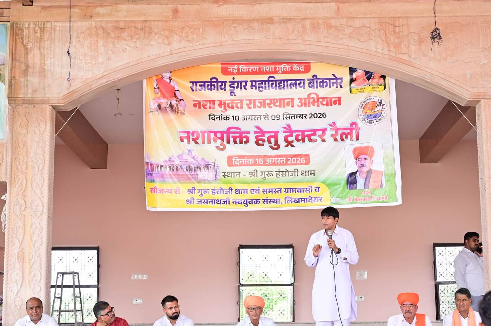

निःशुल्क सामग्री
ज्ञान एवं संसाधन केंद्र
जानकारी ही बचाव की पहली शक्ति है
यह अनुभाग शिक्षकों, विद्यार्थियों, अभिभावकों, पंचायतों एवं नागरिकों के लिए उपयोगी सामग्री उपलब्ध कराएगा।
सारी सामग्री सरल हिंदी में, छपाई के लिए तैयार और निःशुल्क रहेगी। आप इसे डाउनलोड करके विद्यालय, ग्राम सभा, आँगनबाड़ी या अपने घर में उपयोग कर सकते हैं। साझा करने के लिए किसी अनुमति की आवश्यकता नहीं है।
सामग्री
डाउनलोड
नीचे दी गई सामग्री तीन समूहों में रखी गई है — अपने काम का समूह चुनें।
अभिभावकों के लिए
Good Parenting और नशामुक्त समाज
पुस्तिका – 2 · माता-पिता के लिए — संवाद, भरोसा और समय देने के व्यावहारिक सूत्र। 15 अध्याय।
14 पृष्ठ · हिंदी · निःशुल्क
संगति, किशोरावस्था और अभिभावक
किशोर बच्चों के अभिभावकों के लिए — बदलती उम्र और मित्र मंडली को समझना। 17 अध्याय और 8 कार्यपत्रक।
74 पृष्ठ · हिंदी · निःशुल्क
लोकसंकल्प मुख्य परिचय पुस्तिका — भाग 1 व 2
अभियान को समझने की पहली पुस्तिका। दोनों भाग हिंदी में और निःशुल्क हैं।
भाग 1 — लोकसंकल्प क्या है, नशे की सामाजिक स्वीकृति और समाधान का मॉडल · 18 अध्याय · 14 पृष्ठ
भाग 2 — युवा, नशा और भविष्य : चुनौतियाँ, कारण और समाधान · 10 अध्याय · 11 पृष्ठ
नशे की सामाजिक स्वीकृति का समाजशास्त्र
अभियान की वैचारिक पुस्तिका — नशे को सामाजिक स्वीकृति कैसे मिलती है, और उसे बदलने का कार्यमॉडल। 10 अध्याय और 10 प्रारूप।
48 पृष्ठ · हिंदी · निःशुल्क
शिक्षकों एवं विद्यालयों के लिए
विद्यालय, शिक्षक और नशामुक्त सामाजिक परिवर्तन
शिक्षकों के लिए — कक्षा और विद्यालय स्तर पर अभियान चलाने का क्रमबद्ध मार्ग, विद्यालय लोकसंकल्प क्लब से ग्राम सभा तक। 15 अध्याय।
13 पृष्ठ · हिंदी · निःशुल्क
ग्राम सभा संचालन मार्गदर्शिका
ग्राम समिति एवं संयोजकों के लिए — सभा की तैयारी से रिपोर्ट तक पूरा क्रम, मंच संचालन स्क्रिप्ट और कार्यक्रम दिवस चेकलिस्ट सहित। 17 अध्याय।
9 पृष्ठ · हिंदी · निःशुल्क
भाषण सामग्री एवं वक्ता मार्गदर्शिका
वक्ताओं एवं विद्यार्थियों के लिए — प्रार्थना सभा से ग्राम सभा तक तैयार भाषण, 50 एक-मिनट भाषण, 25 पूर्ण भाषण, 100 उद्धरण और मंच संचालन स्क्रिप्ट।
72 पृष्ठ · हिंदी · निःशुल्क
युवा क्लब एवं विद्यालय परिवर्तन मॉडल
विद्यार्थियों और युवाओं के लिए — क्लब की संरचना, हर महीने की गतिविधियाँ, जीवन कौशल, खेल, करियर मार्गदर्शन और युवा संकल्प। 14 अध्याय।
8 पृष्ठ · हिंदी · निःशुल्क
सभी के लिए
नशे के दुष्प्रभाव
हर नागरिक के लिए — शरीर, परिवार और समाज पर पड़ने वाले प्रभावों की सरल जानकारी।
PDF · A4 · हिंदी
फ़ाइल शीघ्र उपलब्ध
पोस्टर एवं ब्रोशर
ग्राम समिति, दुकानदार और आयोजकों के लिए — छपाई योग्य पोस्टर एवं ब्रोशर संग्रह।
PDF · A3 एवं A5 · हिंदी
फ़ाइल शीघ्र उपलब्ध
वीडियो सामग्री
सभा और कक्षा में दिखाने के लिए — छोटे वीडियो जिन्हें मोबाइल पर भी देखा जा सके।
MP4 · हिंदी
फ़ाइल शीघ्र उपलब्ध
देखें और दिखाएँ
वीडियो सामग्री
ये वीडियो ग्राम सभा, कक्षा और अभिभावक बैठक में दिखाने के लिए तैयार किए जा रहे हैं।

सहायता
अक्सर पूछे जाने वाले प्रश्न
लोकसंकल्प से कैसे जुड़ें?
सबसे आसान तरीका है संकल्प लेना। संकल्प लें पृष्ठ पर दो मिनट में संकल्प लिया जा सकता है। इसके बाद आप अपने गाँव या विद्यालय में सभा और गतिविधियाँ शुरू कर सकते हैं।
ग्राम सभा कौन आयोजित कर सकता है?
कोई भी नागरिक — शिक्षक, पंचायत प्रतिनिधि, महिला समूह, युवा क्लब या ग्राम समिति। किसी विशेष अनुमति की आवश्यकता नहीं है। तैयारी और रिपोर्ट का पूरा क्रम ग्राम सभा पृष्ठ पर दिया गया है।
क्या सामग्री निःशुल्क है?
हाँ। इस पृष्ठ की सारी सामग्री निःशुल्क है। आप इसे डाउनलोड कर सकते हैं, छपवा सकते हैं और आगे साझा कर सकते हैं। शर्त केवल इतनी है कि इसका उपयोग व्यावसायिक लाभ के लिए न हो।
मेरे गाँव में समिति कैसे बने?
ग्राम सभा में सहमति बनाकर एक ग्राम लोकसंकल्प समिति गठित की जाती है। इसमें शिक्षक, महिलाएँ, युवा और पंचायत प्रतिनिधि शामिल किए जाते हैं। चरण ग्राम सभा पृष्ठ पर हैं, और प्रगति डैशबोर्ड पर दिखेगी।
सहायता कहाँ से मिलेगी?
यदि आप या आपके परिवार का कोई सदस्य नशे से प्रभावित है, तो सहायता केंद्र पृष्ठ पर परामर्श, उपचार और नजदीकी केंद्र की जानकारी दी गई है। मदद माँगना कमजोरी नहीं, साहस है।